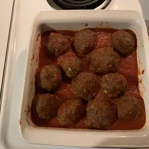

Air Fried Meatball
After trying air fryer meatballs, I will never bake them in the oven again. The insides stay nice and tender while the outsides get a slight crisp on them. The best part is that you can make them ahead of time and freeze for later use.

Ingredients
- 16 ounces lean ground beef
- 4 ounces ground pork
- ½ cup grated Parmesan cheese
- ⅓ cup Italian seasoned bread crumbs
- 1 egg
- 2 cloves garlic, minced
- 1 teaspoon Italian seasoning
- ½ teaspoon salt
Directions
- Preheat an air fryer to 350 degrees F (175 degrees C).
- Combine beef, pork, Parmesan cheese, bread crumbs, egg, garlic, Italian seasoning, and salt in a large bowl. Mix until evenly combined. Form into 16 equal meatballs (a small ice cream scoop is helpful) and place on a baking sheet.
- Place 1/2 of the meatballs in the basket of the air fryer and cook 8 minutes. Shake the basket and cook 2 minutes more. Transfer to a serving plate and let rest for 5 minutes. Repeat with remaining meatballs.